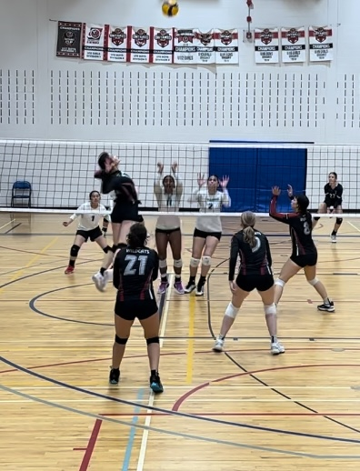
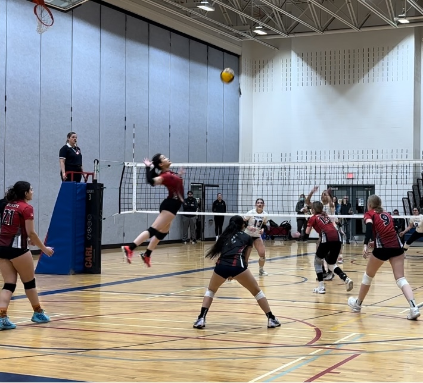

<!DOCTYPE html>
<html lang="en"></html>

<head>
    <meta charset="UTF-8">
    <meta name="viewport" content="width=device-width, initial-scale=1.0">
    <title>Volleyball</title>
    <link rel="stylesheet" href="Css-Files/volleyball-styles.css">
</head>

<body>

    <header>
        <h1>Volleyball</h1>
        <h2>(Continued)</h2>
    </header>
    
    <div class="story" id="volleyball">
        
        

        <p> It's true when they say one only learns to cherish something once they're on the brink of losing it. Before Covid-19, volleyball was just another sport that I played unambitiously.
            Yet when the world fell silent and competitive volleyball in Canada shut down for an indefinite period of time, I suddenly became keenly aware that the sport had already become 
            an irreplaceable part of my life without my realization. This eventually evolved into a newfound gnawing desire and insistent drive to reach higher stages and play varsity volleyball, 
            as the notion of leaving the competition in a few short years manifested itself then to be both distressing and unbearable. </p>
        
        
        

        <p> Since then, I never forgot this initial dream of mine and wholeheartedly threw myself into rigorous and consistent training regimens for the following three years.
            During this time however, I also experienced teams that were riddled with politics and underlying forms of exclusion to the point where volleyball itself lost a bit
            of its color, and been rejected or simply ignored countless times when it came to recruitments, to name a few. I had prolonged periods where I was rapidly losing hope
            and questioning my decision to dedicate so much time to volleyball only to reap what felt like an empty basket every time. But I would always be reminded of my 14 year
            old self and her unreserved love and dedication to the sport all those summers ago, and it would influence me to continue my pursuit, even if it were just for her sake.
            
        <p> Even though that varsity dream from my 14 year old self never did come to fruition, I’ve taken on a different perspective which is that perhaps everything has unfolded for the best.
            Looking back, being able to study something that interests me at a standard that I expect would take precedence over playing on a varsity team, and the end of the OVA for me doesn't
            mean the end of volleyball at all. I still miss and hunger after the adrenaline of true competition, but it’s the delight and passion that volleyball brings me every time I’m on the court that matters the most. Volleyball has become
            far more than just a sport. It's a teacher, a love that taught me how to pursue something fiercely, to shoulder the ominous possibility of defeat and rejection and march forward with a dream, the courage of believing and walking into
            something in which you have no idea whether or not you will succeed, the mentality to chase down every point; every milestone to a 25 point victory regardless of state of your body or the tides of the game,
            and the value of resilience at the end of the day. </p>
    
    </div>

</body>

</html>
